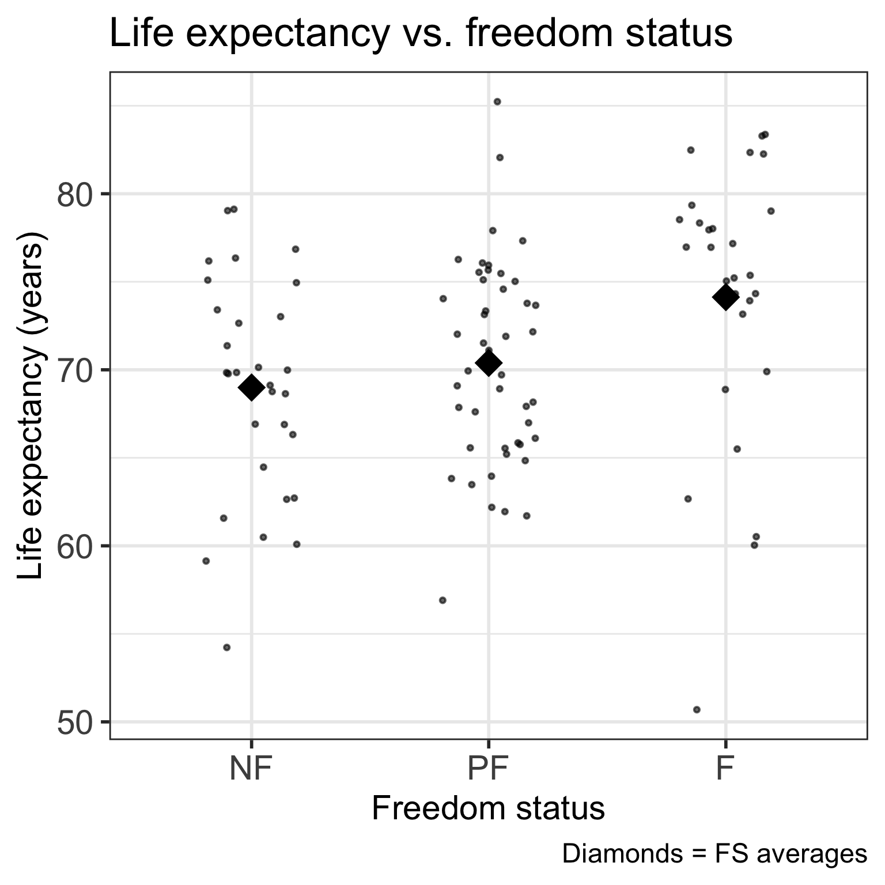
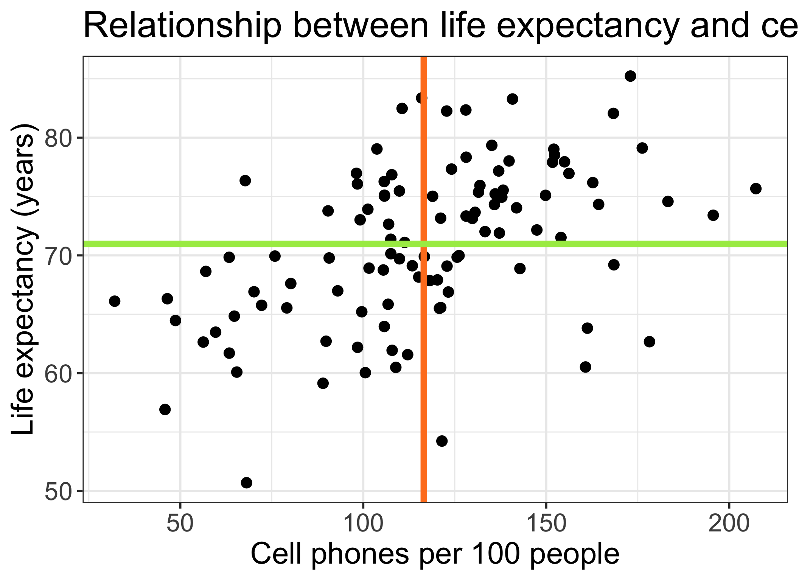

Warning: Using `size` aesthetic for lines was deprecated in ggplot2 3.4.0.
ℹ Please use `linewidth` instead.`geom_smooth()` using formula = 'y ~ x'
Identify different sources of variation in an Analysis of Variance (ANOVA) table
Using the F-test, determine if there is enough evidence that population slope \(\beta_1\) is not 0
Using the F-test, determine if there is enough evidence for association between an outcome and a categorical variable
Calculate and interpret the coefficient of determination
Lesson 3: SLR 1
Lesson 4: SLR 2
Lesson 5: Categorical Covariates
Warning: Using `size` aesthetic for lines was deprecated in ggplot2 3.4.0.
ℹ Please use `linewidth` instead.`geom_smooth()` using formula = 'y ~ x'


Model Selection
Building a model
Selecting variables
Prediction vs interpretation
Comparing potential models
Model Fitting
Find best fit line
Using OLS in this class
Parameter estimation
Categorical covariates
Interactions
Model Evaluation
Model Use (Inference)
Using the F-test, determine if there is enough evidence that population slope \(\beta_1\) is not 0
Using the F-test, determine if there is enough evidence for association between an outcome and a categorical variable
Calculate and interpret the coefficient of determination
The F statistic in linear regression is essentially a proportion of the variance explained by the model vs. the variance not explained by the model
`geom_smooth()` using formula = 'y ~ x'
\[ \begin{aligned} Y_i - \overline{Y} & = (Y_i - \widehat{Y}_i) + (\widehat{Y}_i- \overline{Y})\\ \text{Total variation} & = \text{Residual variation after regression} + \text{Variation explained by regression} \end{aligned}\]
\[Y_i - \overline{Y} = (Y_i - \widehat{Y}_i) + (\widehat{Y}_i- \overline{Y})\]


\[ \begin{aligned} Y_i - \overline{Y} & = (Y_i - \widehat{Y}_i) + (\widehat{Y}_i- \overline{Y})\\ \text{Total variation} & = \text{Variation explained by regression} + \text{Residual variation after regression} \end{aligned}\]
\[\begin{aligned} \sum_{i=1}^n (Y_i - \overline{Y})^2 & = \sum_{i=1}^n (\widehat{Y}_i- \overline{Y})^2 + \sum_{i=1}^n (Y_i - \widehat{Y}_i)^2 \\ SSY & = SSR + SSE \end{aligned}\] \[\text{Total Sum of Squares} = \text{Sum of Squares explained by Regression} + \text{Sum of Squares due to Error (residuals)}\]
ANOVA table:
| Variation Source | df | SS | MS | test statistic | p-value |
|---|---|---|---|---|---|
| Regression | \(1\) | \(SSR\) | \(MSR = \frac{SSR}{1}\) | \(F = \frac{MSR}{MSE}\) | |
| Error | \(n-2\) | \(SSE\) | \(MSE = \frac{SSE}{n-2}\) | ||
| Total | \(n-1\) | \(SSY\) |
\[\begin{aligned} \sum_{i=1}^n (Y_i - \overline{Y})^2 & = \sum_{i=1}^n (\widehat{Y}_i- \overline{Y})^2 + \sum_{i=1}^n (Y_i - \widehat{Y}_i)^2 \\ SSY & = SSR + SSE \end{aligned}\] \[\text{Total Sum of Squares} = \text{Sum of Squares explained by Regression} + \text{Sum of Squares due to Error (residuals)}\]
ANOVA table:
| Variation Source | df | SS | MS | test statistic | p-value |
|---|---|---|---|---|---|
| Regression | \(1\) | \(SSR\) | \(MSR = \frac{SSR}{1}\) | \(F = \frac{MSR}{MSE}\) | |
| Error | \(n-2\) | \(SSE\) | \(MSE = \frac{SSE}{n-2}\) | ||
| Total | \(n-1\) | \(SSY\) |
F-statistic: Proportion of variation that is explained by the model to variation not explained by the model
# Fit regression model:
model1 <- gapm %>% lm(formula = life_exp ~ cell_phones_100)
anova(model1)Analysis of Variance Table
Response: life_exp
Df Sum Sq Mean Sq F value Pr(>F)
cell_phones_100 1 1094.1 1094.10 30.759 2.271e-07 ***
Residuals 103 3663.7 35.57
---
Signif. codes: 0 '***' 0.001 '**' 0.01 '*' 0.05 '.' 0.1 ' ' 1anova(model1) %>% tidy() %>% gt() %>%
tab_options(table.font.size = 40) %>%
fmt_number(decimals = 3)| term | df | sumsq | meansq | statistic | p.value |
|---|---|---|---|---|---|
| cell_phones_100 | 1.000 | 1,094.102 | 1,094.102 | 30.759 | 0.000 |
| Residuals | 103.000 | 3,663.747 | 35.570 | NA | NA |
Using the F-test, determine if there is enough evidence for association between an outcome and a categorical variable
Calculate and interpret the coefficient of determination
The square of a \(t\)-distribution with \(df = \nu\) is an \(F\)-distribution with \(df = 1, \nu\)
\[T_{\nu}^2 \sim F_{1,\nu}\]
Note that the F-test does not support one-sided alternative tests, but the t-test does!
We can think about the hypothesis test for the slope…
Null \(H_0\)
\(\beta_1=0\)
Alternative \(H_1\)
\(\beta_1\neq0\)
in a slightly different way…
Null model (\(\beta_1=0\))
Alternative model (\(\beta_1\neq0\))
In multiple linear regression, we can start using this framework to test multiple coefficient parameters at once
Decide whether or not to reject the smaller reduced model in favor of the larger full model
Cannot do this with the t-test when we have multiple coefficients!
Check the assumptions
Set the level of significance
Specify the null ( \(H_0\) ) and alternative ( \(H_A\) ) hypotheses
Specify the test statistic and its distribution under the null
The calculated test statistic for \(\widehat\beta_1\) is
\[F = \frac{MSR}{MSE}\]
Calculate the p-value
Write a conclusion
We (reject/fail to reject) the null hypothesis that the slope is 0 at the \(100\alpha\%\) significance level. There is (sufficient/insufficient) evidence that there is significant association between (\(Y\)) and (\(X\)) (p-value = \(P(F_{1, n-2} > F)\)).
Check the assumptions: We have met the underlying assumptions (checked in our Model Evaluation step)
Set the level of significance
Specify the null ( \(H_0\) ) and alternative ( \(H_A\) ) hypotheses
The test statistic is \(F\), and follows an F-distribution with numerator \(df=1\) and denominator \(df=n-2 = 80-2\).
nobs(model1)[1] 105anova_tab = anova(model1) %>% tidy()
anova_tab %>% gt() %>% tab_options(table.font.size = 40)| term | df | sumsq | meansq | statistic | p.value |
|---|---|---|---|---|---|
| cell_phones_100 | 1 | 1094.102 | 1094.10190 | 30.75881 | 2.271176e-07 |
| Residuals | 103 | 3663.747 | 35.57035 | NA | NA |
Option 1: Calculate the test statistic using the values in the ANOVA table
\[F = \frac{MSR}{MSE} = \frac{1094.1019013}{35.5703546} = 30.759\]
Option 2: Get the test statistic value (F) from the ANOVA table
\[F = 30.759\]
F_stat = anova_tab$statistic[1]
I tend to skip this step because I can do it all with step 6
As per Step 4, test statistic \(F\) can be modeled by a \(F\)-distribution with \(df_1 = 1\) and \(df_2 = n-2\).
Option 1: Use pf() and our calculated test statistic
# p-value is ALWAYS the right tail for F-test
n = nobs(model1)
pf(F_stat, df1 = 1, df2 = n-2, lower.tail = FALSE)[1] 2.271176e-07anova(model1) %>% tidy() %>% gt() %>%
tab_options(table.font.size = 40)| term | df | sumsq | meansq | statistic | p.value |
|---|---|---|---|---|---|
| cell_phones_100 | 1 | 1094.102 | 1094.10190 | 30.75881 | 2.271176e-07 |
| Residuals | 103 | 3663.747 | 35.57035 | NA | NA |
We reject the null hypothesis that the slope is 0 at the \(5\%\) significance level. There is sufficient evidence that there is significant association between life expectancy and cell phones per 100 people (p-value < 0.0001).
The p-value of the t-test and F-test are the same!!
tidy(model1) %>% gt() %>%
tab_options(table.font.size = 40)| term | estimate | std.error | statistic | p.value |
|---|---|---|---|---|
| (Intercept) | 60.04051297 | 2.05566959 | 29.207278 | 1.215444e-51 |
| cell_phones_100 | 0.09383818 | 0.01691978 | 5.546063 | 2.271176e-07 |
anova(model1) %>% tidy() %>% gt() %>%
tab_options(table.font.size = 40)| term | df | sumsq | meansq | statistic | p.value |
|---|---|---|---|---|---|
| cell_phones_100 | 1 | 1094.102 | 1094.10190 | 30.75881 | 2.271176e-07 |
| Residuals | 103 | 3663.747 | 35.57035 | NA | NA |
This is true when we use the F-test for a single coefficient!
Identify different sources of variation in an Analysis of Variance (ANOVA) table
Using the F-test, determine if there is enough evidence that population slope \(\beta_1\) is not 0
We can create a hypothesis test for more than one coefficient at a time…
Null \(H_0\)
\(\beta_1=\beta_2=0\)
Alternative \(H_1\)
\(\beta_1\neq0\) and/or \(\beta_2\neq0\)
in a slightly different way…
Null model
Alternative* model
*This is not quite the alternative, but if we reject the null, then this is the model we move forward with
\[\begin{aligned} \widehat{\textrm{LE}} = & \widehat\beta_0 + \widehat\beta_1 \cdot I(\text{PF}) + \\ & \widehat\beta_2 \cdot I(\text{F}) \\ \widehat{\textrm{LE}} = & 68.99 + 1.4 \cdot I(\text{PF}) + \\ &5.14 \cdot I(\text{F}) \end{aligned}\]

Check the assumptions
Set the level of significance
Specify the null ( \(H_0\) ) and alternative ( \(H_A\) ) hypotheses
Specify the test statistic and its distribution under the null
The calculated test statistic for \(\beta\)s is
\[F = \frac{MSR}{MSE}\]
Calculate the p-value
Write a conclusion
We (reject/fail to reject) the null hypothesis that the slope is 0 at the \(100\alpha\%\) significance level. There is (sufficient/insufficient) evidence that there is significant association between (\(Y\)) and (\(X\)) (p-value = \(P(F_{1, n-(k+1)} > F)\)).
Check the assumptions: We have met the underlying assumptions (checked in our Model Evaluation step)
Set the level of significance
Specify the null ( \(H_0\) ) and alternative ( \(H_A\) ) hypotheses
The test statistic is \(F\), and follows an F-distribution with numerator \(df=k\) and denominator \(df=n-(k+1) = 105-(2+1)\)
nobs(model1)[1] 105model2 <- gapm %>% lm(formula = life_exp ~ freedom_status)
anova_tab2 = anova(model2) %>% tidy()
anova_tab2 %>% gt() %>% tab_options(table.font.size = 40)| term | df | sumsq | meansq | statistic | p.value |
|---|---|---|---|---|---|
| freedom_status | 2 | 415.9368 | 207.96841 | 4.885585 | 0.009414324 |
| Residuals | 102 | 4341.9116 | 42.56776 | NA | NA |
Option 1: Calculate the test statistic using the values in the ANOVA table
\[F = \frac{MSR}{MSE} = \frac{207.9684098}{42.5677608} = 4.886\]
Option 2: Get the test statistic value (F) from the ANOVA table
\[F = 4.886\]
F_stat2 = anova_tab2$statistic[1]
I tend to skip this step because I can do it all with step 6
As per Step 4, test statistic \(F\) can be modeled by a \(F\)-distribution with \(df_1 = 2\) and \(df_2 = n-3\).
Option 1: Use pf() and our calculated test statistic
# p-value is ALWAYS the right tail for F-test
n = nobs(model1)
pf(F_stat2, df1 = 2, df2 = n-3, lower.tail = FALSE)[1] 0.009414324anova(model2) %>% tidy() %>% gt() %>%
tab_options(table.font.size = 40)| term | df | sumsq | meansq | statistic | p.value |
|---|---|---|---|---|---|
| freedom_status | 2 | 415.9368 | 207.96841 | 4.885585 | 0.009414324 |
| Residuals | 102 | 4341.9116 | 42.56776 | NA | NA |
We reject the null hypothesis that both coefficients are equal to 0 at the \(5\%\) significance level. There is sufficient evidence that there is association between life expectancy and the country’s freedom status (p-value = 0.009).
Identify different sources of variation in an Analysis of Variance (ANOVA) table
Using the F-test, determine if there is enough evidence that population slope \(\beta_1\) is not 0
Using the F-test, determine if there is enough evidence for association between an outcome and a categorical variable
Correlation coefficient \(r\) can tell us about the strength of a relationship between two continuous variables
If \(r = -1\), then there is a perfect negative linear relationship between \(X\) and \(Y\)
If \(r = 1\), then there is a perfect positive linear relationship between \(X\) and \(Y\)
If \(r = 0\), then there is no linear relationship between \(X\) and \(Y\)
Note: All other values of \(r\) tell us that the relationship between \(X\) and \(Y\) is not perfect. The closer \(r\) is to 0, the weaker the linear relationship.

The (Pearson) correlation coefficient \(r\) of variables \(X\) and \(Y\) can be computed using the formula:
\[\begin{aligned} r & = \frac{\sum_{i=1}^n (X_i - \overline{X})(Y_i - \overline{Y})}{\Big(\sum_{i=1}^n (X_i - \overline{X})^2 \sum_{i=1}^n (Y_i - \overline{Y})^2\Big)^{1/2}} \\ & = \frac{SSXY}{\sqrt{SSX \cdot SSY}} \end{aligned}\]
we have the relationship
\[\widehat{\beta}_1 = r\frac{SSY}{SSX},\ \ \text{or},\ \ r = \widehat{\beta}_1\frac{SSX}{SSY}\]

It can be shown that the square of the correlation coefficient \(r\) is equal to
\[R^2 = \frac{SSR}{SSY} = \frac{SSY - SSE}{SSY}\]
We can find the correlation coefficient and square it:
r = cor(x = gapm$life_exp,
y = gapm$cell_phones_100,
use = "complete.obs")
r^2[1] 0.2299573We can pull the coefficient of determination from the model summary:
model1_sum = summary(model1)
r_squared = model1_sum$r.squared
r_squared[1] 0.2299573Interpretation
23% of the variation in countries’ life expectancy is explained by the linear model with number of cell phones per 100 people as the independent variable.
\(R^2\) is not a measure of the magnitude of the slope of the regression line
\(R^2\) is not a measure of the appropriateness of the straight-line model